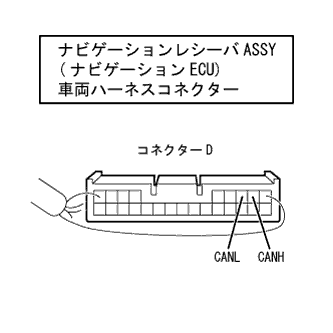

CAN communication system (without VSC) CAN bus one side shift inspection |
| Symptoms | Suspicated part |
|---|---|
| There are multiple ECUs (sensors) that are not displayed on the 'CAN bus connection ECU confirmation' screen of Tascan |
|

| Step 1 | CAN bus single side shift inspection (navigation ECU branch line) |
|  |
Connect the branch connector of the navigation receiver ASSY (navigation ECU) to the can J/C.
IG OFF and separate the navigation receiver ASSY (navigation ECU) vehicle harness connector D from the navigation receiver ASSY (navigation ECU).
Use SST (Toyota Electrical Tester) to measure resistance between Canh ← → Canl.
| Measuring terminal (Terminal name) | Measurement conditions | Measurement result |
|---|---|---|
| D2 (Canh) ← → D3 (CANL) | IG OFF | 54-69Ω |
|
| ||||
| OK | ||
| ||